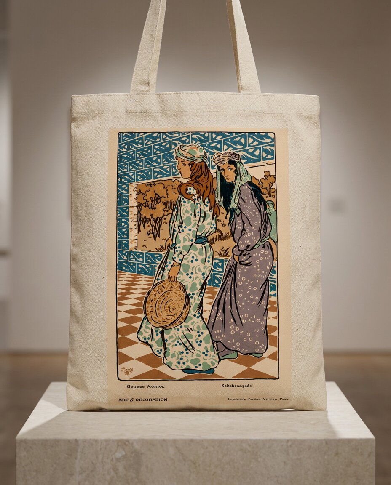

Cotton canvas, screenprint · Natural
RM 69
Printed from a Georges Auriol poster plate made for Art & Décoration — two figures crossing a checkerboard floor, in the exact teal, cream and ochre the original block print used. We kept the credit line in the corner, the way the original page had it. This one doesn't get simplified; it gets carried.
Screenprinted on heavy cotton canvas, reinforced base and stitching, matching webbing straps. One size, built to carry.